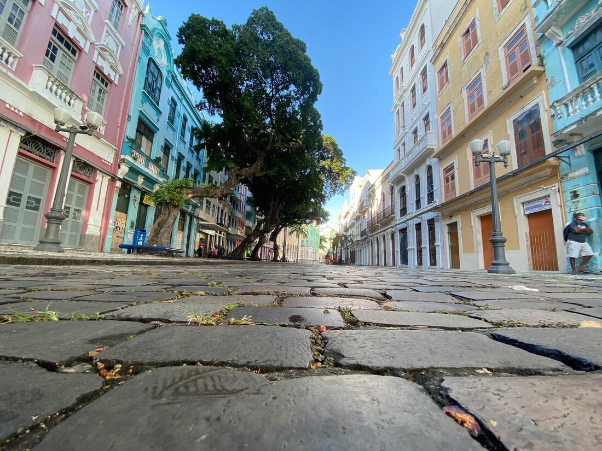
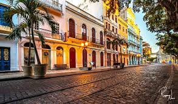
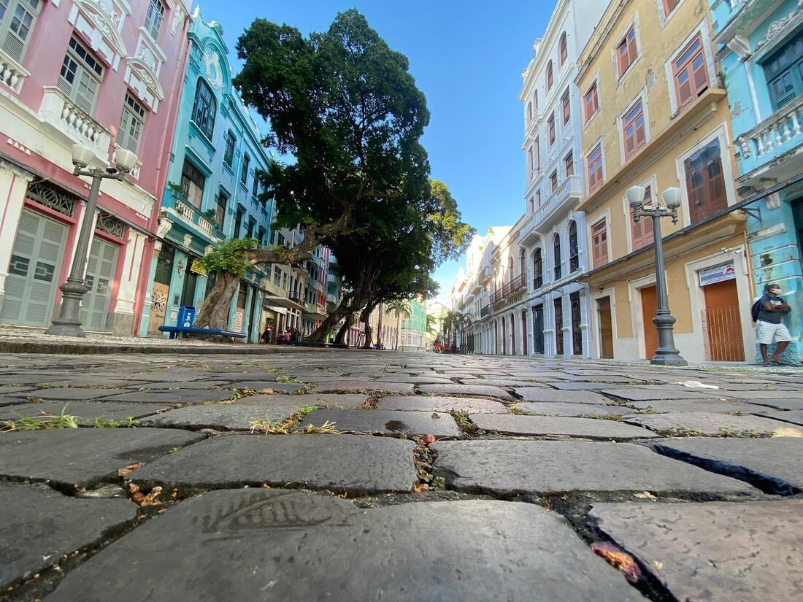
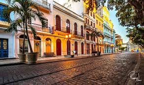

Rua do Bom Jesus
Um dos principais pontos turísticos de Recife, a Rua do Bom Jesus foi eleita a 3ª mais bonita do mundo. A seleção foi feita pela Architectural Digest, importante publicação dos Estados Unidos, que listou 31 ruas espalhadas por vários países – apenas uma no Brasil.
Além da beleza, o local, encravado no centro da capital pernambucana, revela também histórias de moradores, de relacionamentos e é ponto de encontro de famílias e turistas. Até ensaio de casamento já teve por lá.
Os primeiros lugares do ranking feito pela Architectural Digest foram Setenil de Las Bodegas, na Espanha, e Washington Street, no Brooklyn, em Nova York (EUA).
De acordo com o site da revista, “a bela Rua do Bom Jesus ocupa uma das partes mais orientais da cidade. A rua colorida, repleta de palmeiras altas, está repleta de história”. E continua: “datada do século XV, esta rua continha a primeira sinagoga construída nas Américas, a Sinagoga Kahal Zur Israel. O prédio ainda está lá para os visitantes verem”.
Por causa da pandemia do novo coronavírus, o comércio local e a circulação de turistas estão em fase de espera para retomar as atividades.
No período da ocupação holandesa, vários judeus foram se estabelecer em Recife, precisamente na Rua do Bom Jesus. Por este fato, o local ficou conhecido como “Rua dos Judeus”, em referência à liberdade de credo. A rua é considerada a mais antiga da capital e é assim chamada por causa do Arco de Bom Jesus que existia como porta de entrada da cidade.